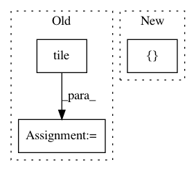

b6437e4dd115c5b290eb84b0620610b497293609,models/official/detection/serving/inputs.py,,raw_image_tensor_input,#,59
Before Change
if batch_size == 1:
images_info = tf.expand_dims(image_info_per_image, axis=0)
else:
images_info = tf.tile(
tf.expand_dims(image_info_per_image, axis=0), [batch_size, 1, 1])
images = placeholder
return placeholder, {"images": images, "image_info": images_info}
After Change
image_info_per_image = [
[image_height, image_width],
[image_height, image_width],
[1.0, 1.0],
[0.0, 0.0]]
if batch_size == 1:
In pattern: SUPERPATTERN
Frequency: 4
Non-data size: 3
Instances
Project Name: tensorflow/tpu
Commit Name: b6437e4dd115c5b290eb84b0620610b497293609
Time: 2020-05-12
Author: pengchong@google.com
File Name: models/official/detection/serving/inputs.py
Class Name:
Method Name: raw_image_tensor_input
Project Name: rail-berkeley/softlearning
Commit Name: f8df44a7c24038d0fa3d7b0f7dc2d8c5e952c81a
Time: 2019-02-01
Author: hartikainen@berkeley.edu
File Name: softlearning/algorithms/sql.py
Class Name: SQL
Method Name: _create_svgd_update
Project Name: neurodsp-tools/neurodsp
Commit Name: 1586d3e6de28778f2152fa780b4c59a01878f7ff
Time: 2021-02-05
Author: ryan.hammonds@utexas.edu
File Name: neurodsp/plts/time_series.py
Class Name:
Method Name: plot_time_series
Project Name: naturomics/CapsLayer
Commit Name: ba2a24b71528b0439e18d028d242635021a3bf25
Time: 2017-11-26
Author: naturomics.liao@gmail.com
File Name: capslayer/layers.py
Class Name:
Method Name: fully_connected